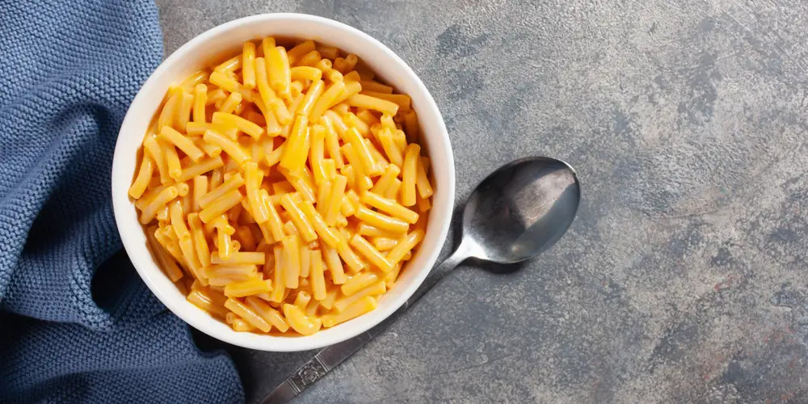

Mac and cheese

This is an everyone's favorite: mac and cheese!
The simplicity of this dish doesn't translate into how damn good it is! DEAR LORD!
So c'mon kids, grab your cooking aprons and stick with me!
Oh, just a reminder: though simple, this macaroni sauce is made of pure milk, basically (and cheese).
So, I really wouldn't recommend it to lactose intolerant folks. But I promise I'll come up with a recipe just fou you guys!
Ingredients
- 3 tablespoons butter
- 1 ½ tablespoon all-purpose flour
- 2 cups milk
- 1 ½ cups shredded cheddar cheese
- 8 ounces uncooked elbow macaroni
- Grated parmesan cheese to taste
- Salt to taste
- Black pepper to taste
Steps
- Cook the macaroni until firm to the bite
- Melt the butter over low heat
- Whisk in the all-purpose flour
- Stir until the mixture becomes paste-like and light golden brown
- Gradually whisk the milk into the mixture and bring to a simmer
- Stir in the shredded cheddar
- Season with salt and black pepper to taste
- Cook and stir over low heat until the cheese is melted and sauce has thickened
- Pour cheese sauce over macaroni and stir until well combined
- Spread the grated parmesan cheese over the macaroni
- Bake in the oven until the topping is golden brown and the cheese sauce is bubbling